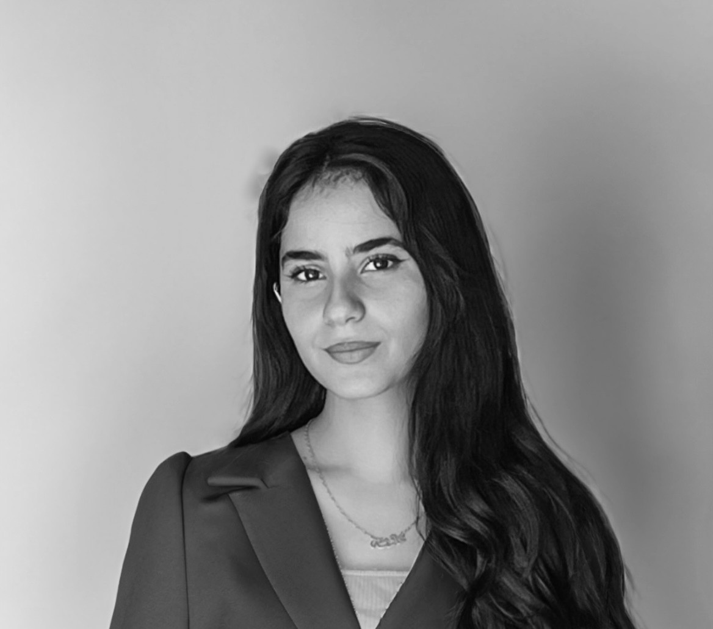

MY ARTISTIC STYLE
My artwork blends expressive colors with storytelling. I often focus on natural light, emotions, movement, and harmony. Each piece reflects a feeling, an experience, or a moment translated into visual form.
THEMES I EXPLORE
I explore themes such as nature, peace, nostalgia, imagination, and emotional expression. My artworks often highlight sunsets, lakes, animals, and expressive abstract forms that speak through color and light.
MATERIALS I USE
I work with acrylics, oil pastels, digital tools, and mixed media. Each material gives me a different way to express mood, texture, and color depth in my paintings.
MY CREATIVE PROCESS
My creative process begins with observation—lighting, shapes, and emotional atmosphere. I sketch ideas, choose color palettes, and layer details to create artworks that feel alive and meaningful. I aim to capture feelings rather than just visuals.
FUTURE PROJECTS
I plan to expand my gallery with new paintings inspired by cities, nature, and cultural identity. I am also exploring larger canvases, character-based art, and expressive digital illustrations.
Contact Me
EMAIL: aishakhaderi@outlook.com
INSTAGRAM: @aishalkhaderi
LOCATION: Amman, Jordan